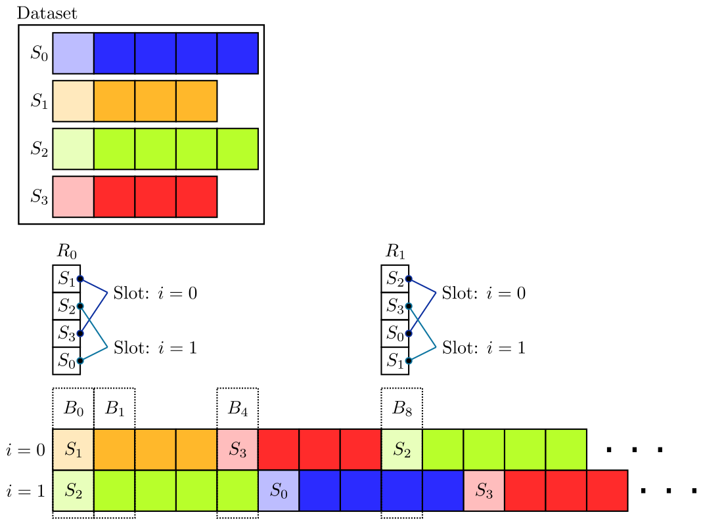

Inputs Submodule
This module contains classes for handling the input data to the DALI pipeline.
- class accvlab.dali_pipeline_framework.inputs.CallableBase[source]
Bases:
ABCAbstract base class for a callable class which can be used in the pipeline.
Note that callables deriving from
CallableBaseare expected to run with the DALI external source not in batch mode, i.e. return one sample at a time. This improves the distribution of the work onto the individual worker processes of the external source.Also see [1], and more specifically [2], for how an input callable class is used to load the input data into a DALI pipeline. The
__call__()operator is the interface that the DALI external source expects.Using a callable with the DALI parallel external source is more efficient than using an input iterable due to the possibility of distribution the work onto multiple workers instead of only running it async to the main thread, but still sequentially in a single worker.
Note that an input callable must be stateless (see warning in [3]), which may make certain advanced sampling patterns more challenging to implement compared to an input iterable.
Note
The
used_sample_data_structureproperty is used by our pipeline to obtain the data format blueprint used for the input. Note that the actual output of a callable is the flattened data from this format (seeSampleDataGroup.get_data()), and the returned blueprint can be used to fill the data back into its structured form (seeSampleDataGroup.set_data()).Note
Note that ready-to use callable classes (
ShuffledShardedInputCallable,SamplerInputCallable) are provided by this module and can be used in many cases, so that often there is no need to implement a custom callable.Note
Also see
IterableBasefor an alternative to the callable interface. While the callable interface is potentially more efficient (allowing to distribute the work onto multiple workers), the iterable interface is more flexible as it is not expected to be stateless.Important
To be used with the DALI parallel external source, the callable needs to be serializable. If it contains any objects that cannot be serialized, these objects should not be created in the constructor, but rather created when the
__call__()method is called for the first time. At this point, the callable is already in the worker process, and therefore, it does not need to be serializable anymore.- abstract property used_sample_data_structure: SampleDataGroup
Get the sample data format of the input.
Get the blueprint (as defined in documentation of
SampleDataGroup, i.e. aSampleDataGroupobject without any actual data but with the data format set up) describing the input data.- Returns:
SampleDataGroupobject describing the input data format.
- abstract __call__(sample_info)[source]
Get data of sample with the ID as described by sample_info.
The returned data is expected to be a flattened sequence of the individual data fields contained in the
used_sample_data_structure, i.e. ifdata_groupis theSampleDataGroupobject containing the data, then the output of this method should bedata_group.get_data()(seeSampleDataGroup.get_data()for more details).- Parameters:
sample_info (
SampleInfo) – Info of the sample to provide the data for.- Returns:
Tuple[DataNode,...] – The input data fields (as flat sequence).- Raises:
StopIteration – If the end of an epoch is encountered. Note that this is part of the normal behavior once the epoch is exhausted and is expected by the external source, and is not an error.
- abstract property length: int | None
Length of the dataset (i.e. number of samples in one epoch).
Providing the length is optional. If it is not implemented, this method still needs to be overridden. In this case, it has to indicate that the length is not available by returning
None.- Returns:
The number of samples or batches in the dataset, or
Noneif not available.
- class accvlab.dali_pipeline_framework.inputs.DataProvider[source]
Bases:
ABCAbstract base class for data providers.
- A data provider is an object that
Defines the data format of the samples
Provides samples from a dataset given sample indices
It acts as an interface between the dataset and the DALI pipeline.
To enable the use of a specific dataset with
PipelineDefinitionas well as the included input callable & iterable classes, a corresponding data provider needs to be implemented.Important
Note that the data provider is not only specific to the dataset, but also specific to a use case (or a set of similar use cases), as it defines the data format of the individual samples.
In simple cases, a single data provider can be parametrized for different use cases. However, in more complex cases, it is recommended to implement different data providers for different use cases, e.g. following the following approach:
Implement a data loader & data container class which are specific to the dataset
Implement a data conversion helper, which can be used by multiple data providers and performs repetitive tasks, e.g. converting the data to the correct format, obtaining the image data from individual files based on the loaded metadata, etc.
Implement use case-specific data providers, using the common functionality of the data loader, data container and conversion helper classes.
This approach allows to keep the data provider class simple and focused on the specific use case, while being able to re-use the functionality which is specific to the used dataset but common to many use cases, e.g. the data loader, data container and conversion helper classes.
- abstract get_data(sample_index)[source]
Get the data for a given sample index.
- Parameters:
sample_index (
int) – The index of the sample to get the data for.- Returns:
SampleDataGroup– The data for the given sample index.
- abstract get_number_of_samples()[source]
Get the number of samples in the dataset.
Note
The number of samples in the dataset not necessarily the number of samples in one epoch, as e.g. some samples might be skipped or repeated to ensure full batches. Here, the actual number of samples in the dataset is returned.
Note
The number of samples depends on the use case (e.g. if the dataset contains images from multiple camera views, is the number of samples the total number of images, or do multiple views need to be loaded for each sample? etc.).
- Returns:
int– The number of samples in the dataset.
- abstract property sample_data_structure: SampleDataGroup
Get the data structure of the samples.
The data structure is a blueprint
SampleDataGroupthat defines the structure of the data without containing the actual data.- Returns:
The data structure of the samples.
- class accvlab.dali_pipeline_framework.inputs.IterableBase[source]
Bases:
ABCAbstract base class for an iterable class which can be used in the pipeline.
Classes derived from
IterableBaseare expected to run in the DALI external source in batch-mode, i.e. returning one batch at a time.Also see [1] for how an input iterable class is used to load the input data into a DALI pipeline.
Iterables are more flexible than callables as they can have an internal state, which is not possible for callables. However, they are less efficient than callables as they only allow to distribute the work onto a single worker when using the DALI parallel external source.
Note
The
used_sample_data_structureproperty is used by our pipeline to obtain the data format blueprint used for the input. Note that the actual output of a callable is the flattened data from this format (seeSampleDataGroup.get_data()), and the returned blueprint can be used to fill the data back into its structured form (seeSampleDataGroup.set_data()).Note
A ready-to-use
SamplerInputIterableis provided. Also seeSamplerInputCallableandShuffledShardedInputCallablefor more ready-to-use options.Note
Also see
CallableBasefor an alternative to the iterable interface. Note that the callable interface is potentially more efficient than the iterable interface (as it allows to distribute the work onto multiple workers), and should be preferred in general. However, for use cases requiring the input object to have an internal state, the iterable interface needs to be used as callables are expected to be stateless.Important
To be used with the DALI parallel external source, the iterable needs to be serializable. If it contains any objects that cannot be serialized, these objects should not be created in the constructor, but rather created when the
__next__()method is called for the first time. At this point, the iterable is already in the worker process, and therefore, it does not need to be serializable anymore.- abstract property used_sample_data_structure: SampleDataGroup
Sample data format of the input.
Get the blueprint (as defined in documentation of
SampleDataGroup, i.e. aSampleDataGroupobject without any actual data but with the data format set up) describing the input data.- Returns:
SampleDataGroupobject describing the input data format
- abstract __iter__()[source]
Get the iterator (can be the same object as self) starting from the beginning.
- Returns:
IterableBase– The iterator starting from the beginning.
- abstract __next__()[source]
Get the next batch of data.
The data is a flattened sequence of data set according to the data format described by
used_sample_data_structureand then flattened. This means thatself.used_sample_data_structure.set_data(self.__next__())would return aSampleDataGroupwith the correct input data format and filled with the actual data.Note
A flat sequence is returned here as this is the format expected by the DALI external source, which will use this object. The flat sequence can be obtained by calling
SampleDataGroup.get_data()on theSampleDataGroupobject containing the input data (according toused_sample_data_structure).- Returns:
tuple– The input data fields (as flat sequence)- Raises:
StopIteration – When there are no more batches to provide. Note that this is part of the normal behavior once the epoch is exhausted and is expected by the external source, and is not an error.
- abstract property length: int | None
Length of one epoch.
Providing the length is optional. If it is not implemented, this method still needs to be overridden. In this case, it has to indicate that the length is not available (by returning
None). :returns: The number of batches in the epoch, orNoneif not available.
- class accvlab.dali_pipeline_framework.inputs.SamplerBase[source]
Bases:
ABCAbstract base class for samplers that provide indices for data loading.
A sampler is responsible for determining which samples from a dataset should be included in each batch during training. It can be epoch-based (where epochs have clear boundaries) or continuous (where sampling continues indefinitely).
A sampler can be used with either
SamplerInputIterableorSamplerInputCallable. Please also see the documentation of these classes.Note
Samplers can be used for complex sampling strategies, e.g. for sampling of sequences. For this, a
SequenceSamplerclass is provided, which can be used to sample consecutive samples (for each sample indexiin consecutive batches) from a set of sequences. See the documentation of the sequence sampler for more details.For simple use-cases, a sampler may not be required. A
ShuffledShardedInputCallableclass is provided, which can be used for random sampling without the need for a sampler implementation.Before implementing a custom sampler, consider whether the available ready-to-use solutions can be used.
Important
To be used with
SamplerInputIterable, the sampler needs to be serializable (see the corresponding note in the documentation ofIterableBase). If the sampler contains any objects that cannot be serialized (e.g. generators), these objects should not be created in the constructor, but rather created when theget_next_batch_indices()method is called for the first time. At this point, the iterable is already in the worker process, and therefore, the sampler does not need to be serializable anymore.Note that the
SamplerInputCallabledoes not require the sampler to be serializable as it is only used to generate the look-up table in advance. However, it is advisable to keep sampler objects compatible with bothSamplerInputIterableandSamplerInputCallable, and therefore, to not create non-serializable objects before the first call toget_next_batch_indices().- abstract get_next_batch_indices()[source]
Get the indices for the samples in the next batch.
If the sampler is epoch-based and the next batch is not inside the current epoch,
StopIterationshall be raised instead of returning data. In this case, a call toreset()indicates the start of the next epoch. Afterreset()is called,get_next_batch_indices()shall continue with returning the indices for the newly started epoch.- Returns:
- Raises:
StopIteration – If the sampler is epoch-based and the current epoch has ended. Note that this is part of the normal behavior once the epoch is exhausted and is expected by the external source, and is not an error.
- abstract property is_epoch_based: bool
Indicate whether the sampling is epoch-based.
- Returns:
Trueif the sampler is epoch-based,Falseotherwise.
- abstract reset()[source]
Start a new epoch.
This method should be called to reset the sampler state and begin a new epoch. Only applicable for epoch-based samplers.
- abstract property length: int | None
Length of one epoch.
Providing the length is optional. If it is not implemented, this method still needs to be overridden. In this case, it has to indicate that the length is not available (by returning
None).- Returns:
The number of samples in the epoch, or
Noneif not available.
- class accvlab.dali_pipeline_framework.inputs.SamplerInputCallable(data_provider, sampler, max_num_iterations, pre_fetch_queue_length, shard_id=0, num_shards=1)[source]
Bases:
CallableBaseInput callable using a sampler to provide data according to the sampler (also see
SamplerBase).This callable also handles indicating the end of an epoch (by raising
StopIteration). Information on when an epoch ends is obtained from the sampler (which in turn should indicate this by raisingStopIteration, see documentation ofSamplerBase).As the sampler can have an internal state (while the callable is expected to be stateless), a look-up table is pre-generated at construction, leading to overhead and the need to know the maximum number of iterations in advance.
Note
To avoid the overhead of pre-generating the look-up table, it is recommended to only use this class if a single process for data loading is not enough and prefer
SamplerInputIterablein general.- Parameters:
data_provider (
DataProvider) – Data provider to use (following the interface defined inDataProvider).sampler (
SamplerBase) – Sampler to use (following the interface defined inSamplerBase).max_num_iterations (
int) – Maximum number of iterations that will be performed.pre_fetch_queue_length (
int) – Length of the pre-fetch queue depth of the DALI pipeline using this input callable. Used together withmax_num_iterationsto ensure that the sampling look-up table is large enough.shard_id (
int, default:0) – Shard ID (default value of 0 should be used if sharding is not used)num_shards (
int, default:1) – Total of shards (default value of 1 should be used if sharding is not used)
- property used_sample_data_structure: SampleDataGroup
Data format blueprint used for the individual samples
- class accvlab.dali_pipeline_framework.inputs.SamplerInputIterable(data_provider, sampler, shard_id=0, num_shards=1)[source]
Bases:
IterableBaseInput iterable using a sampler to provide batches according to the sampler (also see
SamplerBase).The iterable can be used with a parallel external source. However, in this case, the data reading is performed in one worker process due to serial nature of an iterable. This means that while the data reading is asynchronous to the main thread, it is not further parallelized.
This iterable also handles indicating the end of an epoch (by raising
StopIteration). Information on when an epoch ends is obtained from the sampler (which in turn should indicate this by raisingStopIteration, see documentation ofSamplerBase). After the end of the epoch, the iterable needs to be reset (by obtaining a new iterator) before data for the next epoch can be obtained.Note
If further parallelization is desired (i.e. more than one worker thread),
SamplerInputCallablecan be used instead of this class (at the cost of pre-computing look-up tables in advance, see the corresponding note in the documentation ofSamplerInputCallable).- Parameters:
data_provider (
DataProvider) – Data provider to use (following the interface defined inDataProvider).sampler (
SamplerBase) – Sampler to use (following the interface defined inSamplerBase).shard_id (
int, default:0) – Shard ID (default value of 0 should be used if sharding is not used).num_shards (
int, default:1) – Total of shards (default value of 1 should be used if sharding is not used).
- property used_sample_data_structure: SampleDataGroup
Data format blueprint used for the individual samples
- class accvlab.dali_pipeline_framework.inputs.SequenceSampler(total_batch_size, sequence_lenghts, seed, randomize=True)[source]
Bases:
SamplerBaseSampler used to get consecutive samples from sequences contained in the dataset.
For subsequent batches \(B_t\) and \(B_{t+1}\), the individual samples in the batches with the same index \(i\), i.e. \(B_t[i]\) and \(B_{t+1}[i]\), are subsequent samples inside a sequence \(S_j\), i.e. \(B_t[i] = S_j[k]\) and \(B_{t+1}[i] = S_j[k+1]\) (where \(j\) is the index of the sequence in the dataset and \(k\) is the index of the sample in the sequence \(S_j\)), except when one sequence ends and another one begins.

The sampling is performed by assigning for each “sample index slot” \(i\) a set of sequences and then iterating through the sequences and outputting one sample at a time at the position \(i\). For this, the sequences are shuffled (represented by \(R_c\) in the illustration) whenever a new cycle \(c\) is started for one of the slots (\(R_0\) and \(R_1\) in the illustration correspond to the first two cycles).
Note that each slot may reach a new cycle at different iterations \(t\) as the total number of samples may vary for the individual slots. However, for each cycle \(c\), consistent shuffled lists \(R_c\) are used for all slots (using consistent seeds for the shuffling).
As the individual slots \(B_t[i]\) may be in different cycles for a given iteration \(t\):
The cycles do not exactly correspond to epochs (as the cycle border is different for each slot). Therefore, this sampler is not epoch-based.
Although consistent shuffling is used to obtain \(R_c\) across slots, the same sequence may still appear in multiple slots at the same time if the slots are in different cycles for a given iteration \(t\) due to variable sequence length.
- Parameters:
total_batch_size (
int) – Total batch size (i.e. the combined batch size over all shards if sharding is used).sequence_lenghts (
Sequence[int]) – The lengths of the individual sequences. Note that the indices of the samples in the dataset must match the order of sequence lengths given, i.e. if the sequence lengths[10, 12]are given, then it is understood that the dataset contains 2 sequences, with the first containing the samples with indices in the range \([0; 9]\) and the second containing the samples with indices in the range \([10; 21]\).seed (
int) – Random seed for shuffling sequences.randomize (default:
True) – Whether to shuffle sequences. IfFalse, sequences are used in order.
- property length
Length (size of a single epoch) is not defined as there are no clear epoch boundaries.
Indicate this by returning
None.- Returns:
None
- get_next_batch_indices()[source]
Get the indices for the next batch of samples.
- Returns:
List of sample indices for the next batch.
- property is_epoch_based
Indicate that the sampler is not epoch-based by returning
False.- Returns:
False
- reset()[source]
Reset the sampler.
Note that this method is not supported as the sampler is not epoch-based. Calling it will raise an error.
- Raises:
RuntimeError – Will be raised if the method is called as the sampler is not epoch-based.
{kind=link}
- class accvlab.dali_pipeline_framework.inputs.ShuffledShardedInputCallable(data_provider, batch_size, shard_id=0, num_shards=1, shuffle=False, seed=21)[source]
Bases:
CallableBaseInput callable supporting shuffling and sharding.
This class implements data randomization by shuffling, as well as distributing the data into multiple shards. The shuffling and sharding is done following the general approach outlined in [1].
The randomization can be disabled, in which case the data is read in sequential order.
Note
If the data set is not divisible by the batch size (in case of sharding, the total batch size over all shards), the incomplete batch at the end of each epoch will be dropped.
- Parameters:
data_provider (
DataProvider) – Data provider (following the interface defined inDataProvider) used to obtain the samples and additional data.batch_size (
int) – Batch sizeshard_id (
int, default:0) – Shard ID. Needs to be set if sharding is used.num_shards (
int, default:1) – Total number of shards. Needs to be set if sharding is usedshuffle (
bool, default:False) – Whether to shuffle the dataseed (
int, default:21) – Seed used for the shuffling. If sharding is used, the input callables for all shards need to use the same seed.
- property used_sample_data_structure: SampleDataGroup
Get the data format blueprint used for the individual samples